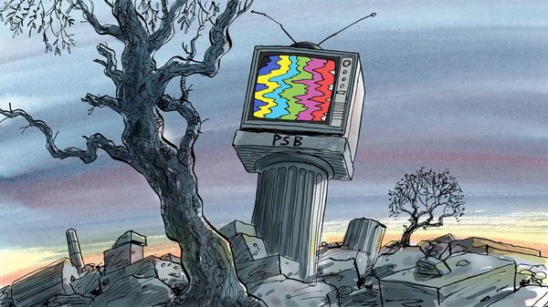

Jul 09, 2026 05:22 AM

Every evening in dozens of European countries, a soothingly familiar ritual unfolds. Cued in by a few bars of portentous music, a much-loved newsreader delivers the day’s happenings with the solemnity of a suburban accountant. A cheery meteorologist then gestures at a map in a segment not much changed since the 1950s, bar the warming weather. Later a costume drama reminds viewers of a more decorous past. As the evening trundles on, a series imported from America passes the time, or a game show with unfathomable rules. On the other side of the television screen, meanwhile, teenagers slumped on the living-room sofa are utterly unaware that any of this exists as they guzzle another hour of TikTok on their phones before turning their attentions to YouTube.
Likely as not, the content being studiously ignored by youngsters is the work of a public-service broadcaster, or PSB. These enduring mastodons are often known by their mere initials—RAI in Italy, ZDF in Germany, TVP in Poland or the BBC in Britain. They are integral to modern European polities. Funded by the state but somehow not of it, they have long been as recognisable to citizens as royal families and the postal service. (Brits call theirs “Auntie”.) Turn on an old-fashioned television set and it will probably serve up a channel hosting a PSB as the cathode ray tubes warm up. Fiddle with your car’s radio and soon enough the sound coming through the static will belong to a publicly funded disc jockey.
For decades after their founding in the 20th century, PSBs had a charmed life: the public in search of information or titillation had few alternatives. Commercial rivals sometimes made inroads, beating PSBs in the ratings by offering racier shows. But public broadcasters’ funding was guaranteed by a dedicated licence fee levied on households, with advertising a handy sideline. Everyone knew where to find them. Their news set the national agenda. Once a year PSBs from Portugal to Finland joined forces for the Eurovision Song Contest, a festival of kitschy pop put on by the European Broadcasting Union (EBU), their umbrella group.
Alas, times have changed as jarringly as the key in a 1990s Eurovision ballad. These days PSBs are under attack from an unlikely alliance of apathetic teenagers, American tech giants and culture-warring politicians. Without changes in regulation, broadcasters whose brands were once synonymous with radio and television fear they will be forgotten, if not gone. Should that happen, they argue, a venerable part of Europe’s social fabric will have frayed.
The politicians offer the noisiest spectacle. Once the biggest threat from officialdom was meddling in editorial affairs, particularly in central Europe, where autocrats sometimes turned PSBs into mouthpieces. (The Hungarian one once controlled by Viktor Orban’s regime apologised on July 7th for its past lies, and paused news programming.) Now the threat is more subtle, but also more widespread. Populists, particularly on the hard right, dislike PSBs, which they see as run by air-kissing urbanistas who turn up their noses at rural and working-class types. Alternative for Germany and France’s National Rally have vowed to privatise their respective state broadcasters. Giorgia Meloni in Italy has been accused of politicising RAI. In Switzerland a recent referendum called for a slashing of the licence fee—though it was comfortably defeated.
Partly as a result, PSB budgets have been squeezed. They have fallen by a tenth in the past decade, says the EBU—even as pricey obligations, such as running regional radio broadcasts or maintaining classical-music orchestras, have not disappeared. Licence fees that guaranteed editorial independence are sometimes being replaced by straight-up government funding. The populist Czech government is mulling such a move, alongside funding cuts. That would erode the safeguards against politicians meddling in editorial output, warns René Zavoral, head of the public radio there.
Worse, the funding squeeze comes just as PSBs are no longer so sure of finding an audience. Like newspapers and other traditional media, they are facing stiffer competition. Younger viewers go for streamed series over linear television, and prefer podcasts to radio. Though PSBs offer these, they often do so via platforms controlled by tech giants. These serve up content based not on the public interest, but on what keeps up engagement. Buy a TV these days and the remote control may well include a Netflix or YouTube button. Finding a PSB’s output might take quite a bit of fiddling, buried on the 15th page of a television menu between a Korean yoga app and a shopping channel that has paid to be featured.
The state broadcasters’ latest gambit is thus to find regulatory ways to keep their perch. The EBU is lobbying for the European Union to mandate “prominence” rules for PSBs. These might force makers of TV sets or car radios, for example, to ensure it is easy to find state media. More controversially, it might result in social-media titans like TikTok, YouTube or Facebook being forced to serve up state-funded content, on the dubious logic that this is somehow of higher quality. “What we want is for people to have the choice to see our content,” says Noel Curran, the EBU’s boss.
Whether teenagers know it or not, public-service broadcasters matter. Yes, they overplay their distinctiveness: on a recent evening France 2 aired six back-to-back episodes of a dubbed detective series, while those in other countries served up World Cup football. That is hardly fare the commercial sector would shun. Some PSBs are bloated, their stars overpaid. But even if imperfect, these stalwarts of shared public consciousness offer a remedy against the polarisation affecting European societies, a trusted place for nations to see themselves reflected. In case of a war or crisis, the public would not turn to some YouTube influencer for information—they would flock to established state-run outlets. If they could remember how to find the channel, that is.■
Subscribers to The Economist can sign up to our Opinion newsletter, which brings together the best of our leaders, columns, guest essays and reader correspondence.